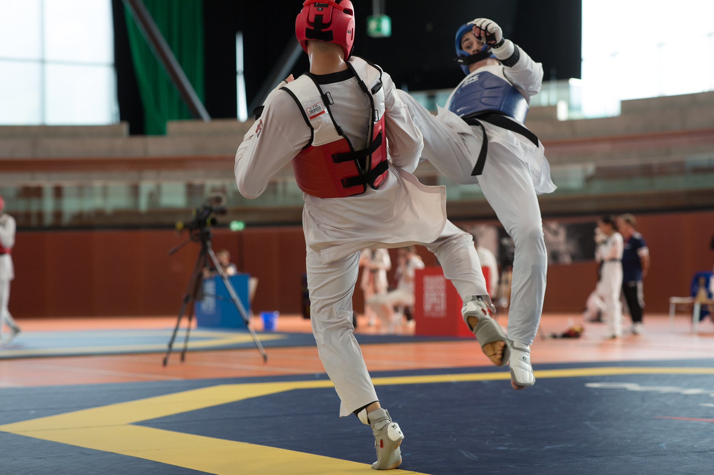
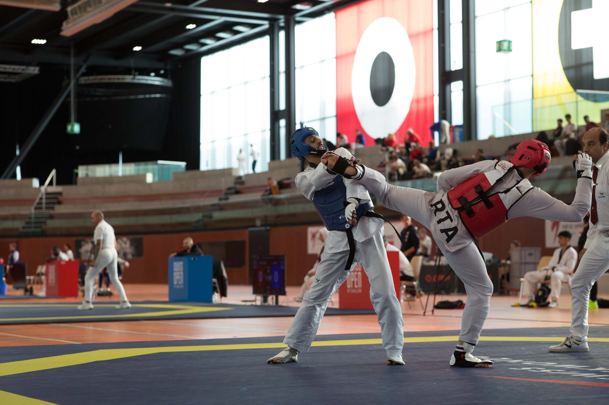

Training & Wettkampf
Teilnahme an Trainingslagern und Wettkämpfen.
SWISS TAEKWONDO REFUGEE TEAM
Chancen durch Sport. Würde durch Wettkampf. Ein Team, das Grenzen überwindet.
Team unterstützen
AUSGANGSLAGE
Swiss Taekwondo fördert zahlreiche internationale Spitzensportler:innen, darunter Flüchtlinge, Menschen mit Migrationshintergrund, die entscheidend zum Leistungsniveau des nationalen Trainingsbetriebs beitragen.
Das Hochleistungssystem von Swiss Taekwondo – der HUB – richtet sich primär an Schweizer Nationalkader-Athlet:innen. Gleichzeitig trainieren im selben Umfeld zahlreiche internationale Athlet:innen als Trainingspartner:innen, Coaches und Leistungsträger.
ZIEL
Das United High Performance Team schafft einen klaren, leistungsorientierten Rahmen für internationale und geflüchtete Athlet:innen.
ETHIK
Leistung und Verantwortung. Kein Widerspruch.
Swiss Taekwondo verbindet sportliche Exzellenz mit sozialer Verantwortung.
ATHLETEN


BENEFITS
Teilnahme an Trainingslagern und Wettkämpfen.
Zugang zu Physiotherapie, Rehabilitation und Monitoring.
Hilfe bei Visa, Reisen und Organisation.
IMPRESSIONEN


ENGAGEMENT
Unterstütze das UHP Team und bleibe informiert.